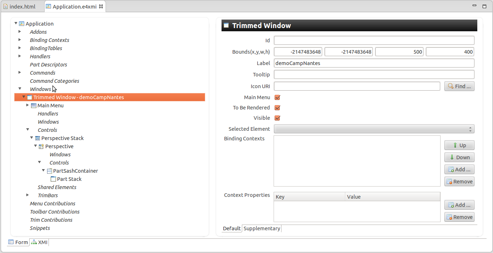
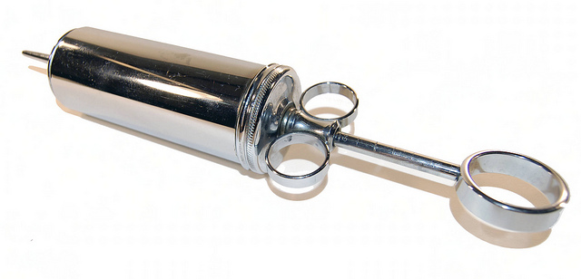
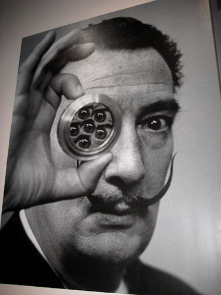
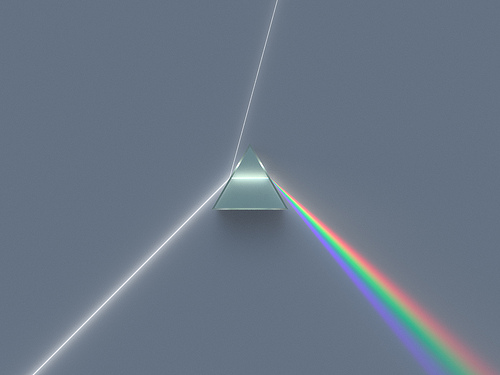

Eclipse 4 for developers
cool new stuff
(you coding with Eclipse 4)
Eclipse demo camp Nantes 2012
@xavier_seignard
(you coding with Eclipse 4)


// DI @Inject @Named @Optional @Preference // behavior @nnotations @PostConstruct @PreDestroy @Execute @Focus
implements and extends
usage
@Inject
@Optional
void handleMessage(@UIEventTopic("demoCamp/nantes") Object obj) {
// do something
}
@Inject
@Optional
private IEventBroker eventBroker;
...
@Execute
public void execute() {
...
// async
eventBroker.post("demoCamp/nantes", "Hello demo camp!");
// sync
eventBroker.send("demoCamp/nantes", "Hello demo camp!");
...
}

<extension
id="product"
point="org.eclipse.core.runtime.products">
<product
name="demoCampNantes"
application="org.eclipse.e4.ui.workbench.swt.E4Application">
...
<property
name="applicationCSS"
value="platform:/plugin/demoCampNantes/css/default.css">
</property>
</product>
</extension>
// scoping through workbench model MParts
.MTrimmedWindow Text, .MWindow Text {
color: ‘white’;
background-color: ‘black’;
}

Use your favorite UI tooklit

Extend the application model with your own business Parts
by @vogella


Eclipse 4 application platefrom provides a compatibility layer with the Eclipse 3 Worbench API
And thanks to:
for the organization!
And to Mickael Istria for his review